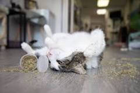

The Meow York Times
Street Angels, a huge campaign to make house for street cats in Iran
The main threat to street cats in winter is lack of a warm and dry place.Some of these cats warm themselves by going under car hoods, resulting in the death of the cats. A campaign on Instagram started convincing people to make houses for the cats in their neighborhood. They were told to place it in their apartment parking so the street cats could stay safe in the winter. Hadi Asgharpour asked Pishidarmani followers to participate in this campaign.


How do we know what our cat wants from us?
When your cat is messing around outside the litter box!, he is probably trying to communicate that he does not like something about the toilet. This type of behavior may indicate that you have more than one cat in your household. Purring means that your cat is happy and comfortable. Purring is one of the most important indicators of whether your cat is satisfied . Always pay attention to your cat's body language when you hear the purring sound to ensure that it is not angry. Your cat is likely to be happy if it lifts its tail, rubs its face against your body, or shows you its belly. Cats demonstrate affection in many ways and use a variety of visible and invisible behaviors to tell you that they love you and care about you. It is a sign that a cat likes you if it rubs itself on your hands or feet. In adulthood, cats show the same behavior toward their owner as they do toward their mother during their childhood. In fact, these cats show you with this behavior that they are comfortable and satisfied in your presence these behaviors and mischief.
Is catnip technically a drug?
The short answer is no, catnip is not a drug in the traditional sense. To have an effect on your cat, it does not have to be ingested or metabolized as something like THC needs to be. This is because catnip actually works entirely on a scent.
